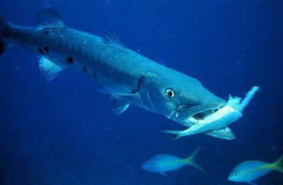

Opis:
Barrakuda to duża, okoniokształtna, drapieżna ryba morska zamieszkująca tropikalne i subtropikalne wody mórz i oceanów całego świata. Barakuda kształtem przypomina szczupaka ze względu na wydłużoną głowę i długi pysk, silne szczęki z dużymi, ostrymi zębami przypominającymi kły. Barrakudy posiadają ubarwienie srebrzyste, stalowoszare lub brązowe, brzuch biały. Na ciele, w dolnej części, ciemne plamki. Największe gatunki dorastają do 3 metrów długości i 40 kg wagi. Polują na stadne ryby, podążając ich śladem często na dłuższych odcinkach. Ich strategia polega na szybkim ataku z prędkością nawet do 45 km na godzinę. Większe gatunki barrakud atakują również ofiary zbliżone wielkością do swoich rozmiarów odgryzając, wyszarpując kawałki mięsa.
Ciekawostki:
Barrakudy są bardzo żarłoczne.
Większość czasu spędzają na pływaniu na tyle wolno, by szukać pożywienia i przyspieszają tylko wtedy, gdy posiłek jest w ich zasięgu.